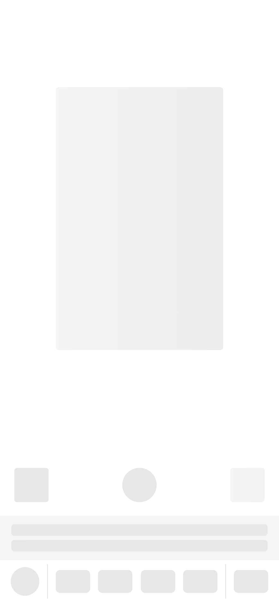

הדמיה · כלי העיצוב בטלפון
מסך טעינה במקום המסך האפור.
מהלחיצה על "התחילו לעצב" ועד ש-Zakeke מוכן, הלקוח רואה את הכובע שבחר, את שם המותג ופס התקדמות, במקום מסך לבן ואחריו שלד אפור. הזמן עצמו לא משתנה (כ-10 שניות בטלפון טוב), אבל המסך מראה שמשהו קורה.
היוםהשלד האפור של Zakeke, כ-10 שניות

מוצעמיד בלחיצה, ועד שהכלי מוכן


גם כובע אחד
מכינים את הכובע שלכם לעיצוב.
Dad Cap · אדום
עוד כמה שניות והכלי מוכן
מוצע, במחשבאותו מסך, באזור של הכלי
גם כובע אחד
מכינים את הכובע שלכם לעיצוב.
Dad Cap · אדום
עוד כמה שניות והכלי מוכן
איך זה יעבוד
- מתי מופיע: מיד בלחיצה על "התחילו לעצב", עוד בעמוד הבחירה, כך שאין יותר רגע שבו "לא קורה כלום" בזמן שהשרת מכין את עמוד הכלי
- מתי נעלם: כש-Zakeke מודיע לעמוד שהוא מוכן (הוא שולח הודעה כזו), והמסך נעלם בהדרגה
- רשת ביטחון: אחרי 20 שניות המסך נעלם בכל מקרה, כדי שלקוח לא ייתקע
- התמונה והשם: של הכובע שהלקוח בחר בעמוד הבחירה (גזרה וצבע)
- בדיקה: בטלפון ובמחשב, כאורח, כולל הגובה של חלון Zakeke בטלפון (הלקח מ-22.11)